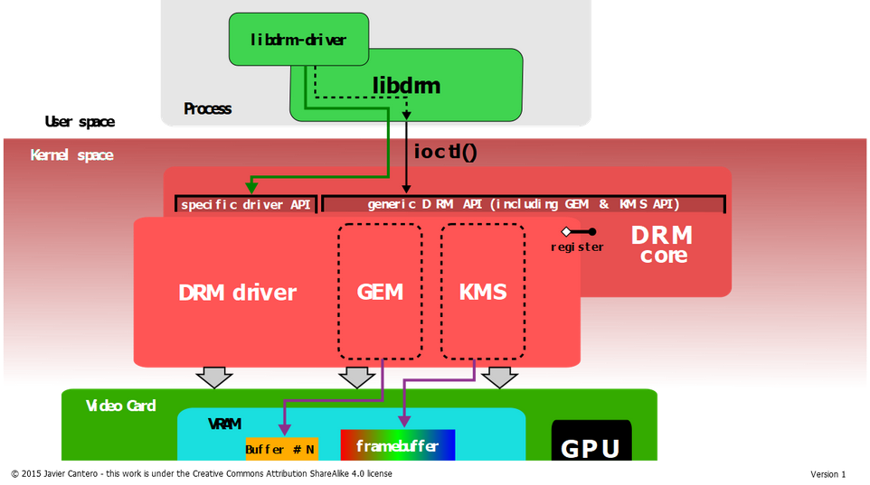
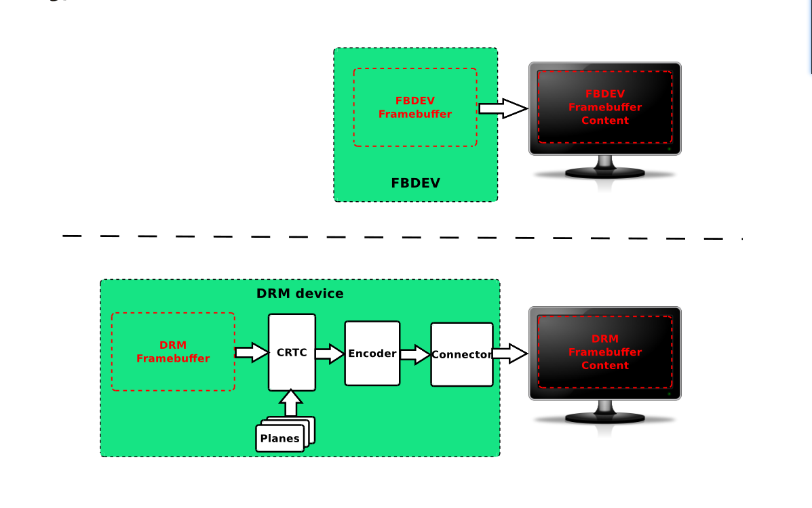
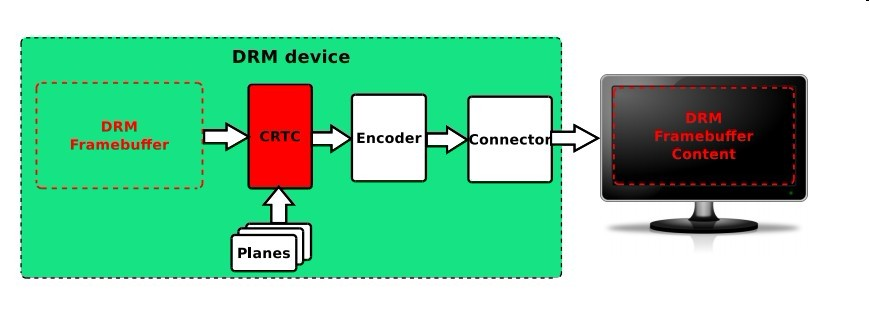
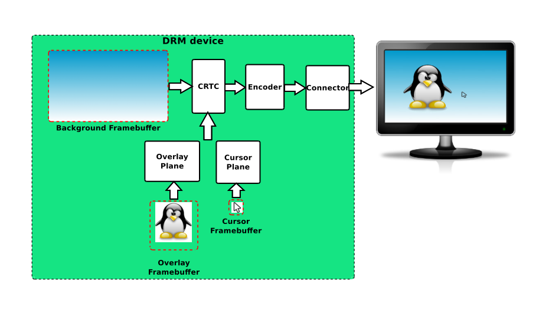

DRM介绍#
DRM是Linux目前主流的图形显示框架，相比FB架构，DRM更能适应当前日益更新的显示硬件。 比如FB原生不支持多层合成，不支持VSYNC，不支持DMA-BUF，不支持异步更新，不支持fence机制等等， 而这些功能DRM原生都支持。同时DRM可以统一管理GPU和Display驱动，使得软件架构更为统一，方便管理和维护。
DRM架构#

可以看到DRM的图像系统可以分为两部分
应用层– libdrm
内核驱动层— GEM, KMS
libdrm: 对底层接口进行封装，向上层提供通用的API接口，主要是对各种IOCTL接口进行封装。
KMS(Kernel Mode Setting): 即Mode setting：更新画面和设置显示参数。
更新画面：显示buffer的切换，多图层的合成方式，以及每个图层的显示位置。
设置显示参数：包括分辨率、刷新率、电源状态（休眠唤醒）等。
GEM(Graphic Execution Manager): 主要负责显示buffer的分配和释放，内存管理与同步。
DRM显示#
DRM与framebuffer的区别#

framebuffer的使用十分简单，只需要在用户空间定义一个framebuffer的内存空间， 只要直接操作这块内存就可以轻易的改变屏幕的显示
对于DRM而言，在framebuffer与显示器之间有四个部件， framebuffer的数据经过几个部件的联合处理最终把图像输出到显示器中
DRM显示系统分析#

DRM frambuffer
与上一章节的framebuffer一样，DRM Framebuffer也是一片存放图像的内存区域， 且需要设置图像的格式(RGB888,YUV,C8等)以及画布的大小
CRTC
CRTC的名字来源于Cathode Ray Tube Controller，中文名为阴极射线显像管控制器 世界上第一台彩色电视正是CRT显示器， 取这个名字的主要原因这个部件很像阴极射线显像管控制器， 电子枪打出的电子撞击到屏幕上的荧光物质使其发光。只要控制电子枪从左到右扫完一行(也就是扫描一行)，然后 从上到下扫描完所有行，这样一帧图像就显示出来了。也就是说，显示一帧图像时电子枪是按照‘Z’形在运动，当扫描速度足够快的时候看起来就是一幅完成的画面了。 在DRM显示系统中CRTC会配置display timings和显示分辨率(Planes提供)来扫描framebuffer上的内容，传给Encoder。 display timings: 扫描framebuffer的时序，因为LCD屏的显示并不像0.96寸的屏幕那样， 直接把所有的显示数据写进去就可以显示东西，LCD屏需要一定的时序才能正确显示东西， 因此，CRTC在这里就有着很重要的作用，生成视频模式定时信号,输出内容到Encoder中，Encoder和Connector则只作为数据的转换和传输
Planes
普遍翻译为平面，我觉得译为图层更合适，Planes是一个包含向CRTC发送数据的缓存块的内存对象， 每个CRTC必须关联一个Planes，它是CRTC决定采用哪种视频模式的根据—显示分辨率（宽度和高度），像素大小，像素格式，刷新率等
Planes会分为三种类型：
DRM_PLANE_TYPE_PRIMARY: 主要图层，显示背景或者图像内容，每个CRTC中含一个
DRM_PLANE_TYPE_OVERLAY： 用于显示叠加、缩放，每个CRTC中含一个以上
DRM_PLANE_TYPE_CURSOR： 用于显示鼠标，每个CRTC中含0-N个
通常驱动会把framebuffer绑定到 DRM_PLANE_TYPE_PRIMARY 上。 LubanCat-RK系列板卡图层包含三个，一个 DRM_PLANE_TYPE_PRIMARY 和两个 DRM_PLANE_TYPE_OVERLAY （其中一个无法正常使用） Planes叠加的现象如下:

Encoder
译为编码器。它的作用就是将 pixel 像素编码（转换）为显示器所需要的信号。 如果我们要把图像输出到不同的显示器上显示，需要将其转化为不同的电信号，比如 DVID、VGA、YPbPr、CVBS、Mipi、eDP 等。 所以它的作用：负责将帧转换为适当的格式，通过连接器传输。 比如说：HDMI connector 需要使用TMDS格式的数据才能驱动，因此需要一个能够把像素格式转换为TMDS的编码器。
Connector
译为连接器。Connector 常常对应于物理连接器 (VGA, DVI, FPD-Link, HDMI, DisplayPort, S-Video …) 他会连接将一个物理显示输出设备 (monitor, laptop panel, …) 。 与当前物理连接的输出设备相关的信息（如连接状态，EDID数据，DPMS状态或支持的视频模式）也存储在 Connector 内。